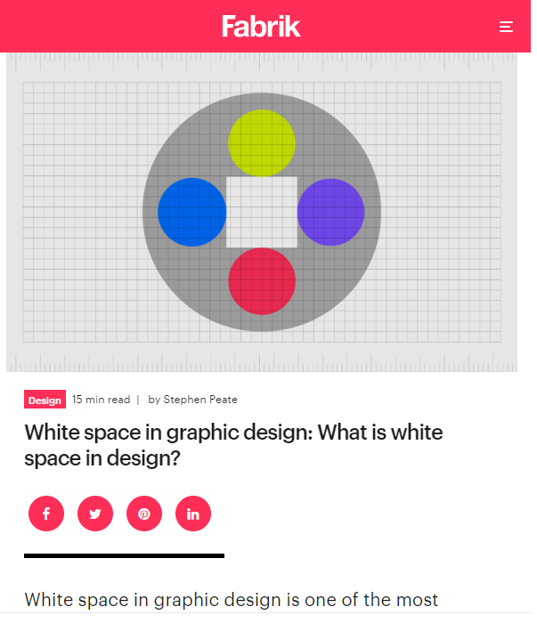

Visual Hierarchy

What is visual hierarchy?
Commonly referred to as hierarchy in the Principles of Design, visual hierarchy is a way to visually rank your design elements. It’s based on the order of visual importance, rather than aesthetics or design styles.
White Space and Clean Design
What is visual hierarchy?
Commonly referred to as hierarchy in the Principles of Design, visual hierarchy is a way to visually rank your design elements. It’s based on the order of visual importance, rather than aesthetics or design styles.
PARC: Alignment
What is visual hierarchy?
Commonly referred to as hierarchy in the Principles of Design, visual hierarchy is a way to visually rank your design elements. It’s based on the order of visual importance, rather than aesthetics or design styles.